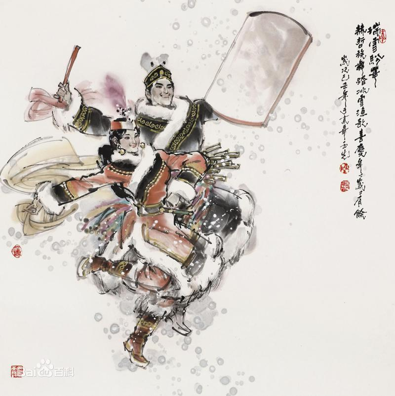

- 民族简介
- 文化习俗
- 历史发展
- 旅游介绍
赫哲族
赫哲族 赫哲族是中国东北地区一个历史悠久的少数民族，民族语言为赫哲语，属阿尔泰语系满-通古斯语族满语支（也有观点认为应归入那乃次语支），没有本民族的文字，使用西里尔字母来记录语言，因长期与汉族交错杂居，通用汉语。 由于居住地域广阔，赫哲人的自称较多，如“那贝”、“那乃”、“那尼傲”，“赫哲”作为族称最早出现于康熙二年（1663）三月，1934年凌纯声《松花江下游的赫哲族》一书出版后，“赫哲”作为族称开始广泛传播。 赫哲族主要分布于黑龙江、松花江、乌苏里江交汇构成的三江平原和完达山余脉，集中居住于三乡两村，即同江市街津口赫哲族乡、八岔赫哲族乡、双鸭山市饶河县四排赫哲族乡和佳木斯市敖其镇敖其赫哲族村、抚远县抓吉镇抓吉赫哲族村。根据2010年第六次全国人口普查统计，赫哲族人口数为5354人 。
由于居住地域广阔，赫哲人的自称较多。 过去，居住在今富锦市大屯以上松花江沿岸的人自称“那贝”；居住于今富锦市嘎尔当至街津口村的人自称“那乃”；居住于今同江市街津口村以下至乌苏里江沿岸的人自称“那尼傲”。这三种称呼中的“那”都是“本地”、“当地”之意，“乃”、“贝”、“尼傲”都是人之意。 此外，原居住在下八岔以下地区和乌苏里江沿岸的人被称为“赫真”或“赫吉斯勒”，意为“下游人”或“东方人”；原居住于勤得利以上混同江和松花江沿岸的人还自称“奇楞”。 “赫哲”是从“赫真”变音而来，是“黑斤”、“黑津”、“黑金”、“黑哲”、“赫斤”、“赫金”等名称的同音异写。“赫哲”作为族称最早出现于康熙二年（1663）三月 。1934年凌纯声《松花江下游的赫哲族》一书出版后，“赫哲”作为族称广泛传播 。">
信仰
新中国成立以前，赫哲人普遍存在图腾崇拜、自然崇 拜、灵物崇拜、鬼神崇拜和祖先崇拜等原始崇拜及萨满教信仰。万物有灵论构成了赫哲人原始崇拜和原始宗教信仰的基础。 “图腾”意为“他的亲族”。将某一动物、植物等视为自己氏族的保护者和忌物，有血缘关系。过去赫哲族有熊图腾和虎图腾崇拜的痕迹。赫哲族在猎杀和食用熊、虎肉后，都有谢罪等仪式或举动。
赫哲人认为，自然界的万物都有神灵，如树神、山神、水神、火神、虎神、熊神、狼神、鹰神、闪电神等等，不胜枚举。 赫哲人认为，某一物体是神物，就能够驱凶避邪。对奇山、怪石、神树、护身符的崇拜属于灵物崇拜。在婴儿摇篮边悬挂熊、虎、狼等兽牙的习俗，即认为上述物体可以驱凶避邪，是保护婴儿的神物。 赫哲人相信万物有灵和灵魂不死，因此也相信祖先的灵魂不死，崇拜祖先。他们称祖宗三代为“别欧本玛法”，过年时要把祖先供在屋内西墙上，以猪头等为供品，焚香悼念。
建筑
赫哲人的住房原始、简陋。 临时住处有尖圆顶的撮罗子和地窨子、“温特哈”、草窝棚等。固定的住处有马架子、用草苫顶的正房。 历史上的赫哲族还曾住过树屋，是巢居的痕迹。正房的东侧或西侧一般还搭建鱼楼子，存放鱼和兽肉干、粮食或其他物品 。
服饰
历史上，赫哲人的服饰、被褥等用鱼、兽皮制作, 居住在混同江沿岸、同江勤得利以上至松花江下游的赫哲人，主要用狍皮、鹿皮做衣料，只有靰鞡、套裤用鱼皮。勤得利以下至混同江下游、乌苏里江一带的赫哲人多以鱼皮做衣服。 布匹虽然很早就传入赫哲人地区，但真正流行于清末。“男以皮为帽，冬则貂帽狐裘。妇女帽如兜鹜，衣服多用鱼皮，而缘以色布，边缀铜铃” ，说的就是当时赫哲人的服饰状况。 过去，赫哲人的兽皮服饰主要有：狍（鹿）皮大衣、狍（鹿）皮衣、裤，狍（鹿）皮被、褥，狍头皮帽子、手闷子、皮袜子、靰鞡等。冬季 穿的衣裤用 “成皮”缝制，绒毛多，皮板厚，暖和而耐用。春、夏、秋三季则穿初冬皮、大秋皮和夏季皮（红杠子皮）做成的衣裤，毛短，较凉爽。用鱼皮制作衣、套裤、靰鞡等。有的衣边饰以贝壳、铜铃、铜钱等饰件。
饮食
赫哲人的饮食以鱼、兽肉和野菜为主，小米是副食。 赫哲人的饮食分生、熟两种。 生食有鲜鱼和鱼、兽肉干；熟食则有鱼松、炖鱼、煎鱼、炸鱼、烤鱼、兽肉干、炖肉、炒肉、鱼肉粥等。鱼松是每餐必上的一道菜。生吃的鱼类有鲟鱼、鳇鱼、鲤鱼、白鱼、草根鱼、鲢鱼等。 赫哲族常食拌菜生鱼，鱼被放血后，将剔下的鱼肉切成细丝，拌上野生的“江葱”和野辣椒，加适量的醋和盐。在春、夏、秋季，把活鱼和新鲜的鱼肉剔下，切成薄片，蘸醋、盐食用就叫“拉布特喀”；把新鲜鱼肉剔下，切成连在鱼皮上的薄片，用削尖的鲜柳条串上，放于旺火燎烧成三四分熟，蘸醋、盐食用，就叫“达勒格切”；将去皮的冻鱼削成很薄的冻鱼片（类似于刨花），蘸醋、盐水和辣椒油食用，称之为“苏日阿克”，这是下酒之佳肴 [3] 。
历史
赫哲人先民是肃慎族系的组成部分，历史上包含于肃慎、挹娄、勿吉等古代民族之中。
唐代和渤海国时期，赫哲族先民与黑水靺鞨有密切的渊源关系，是 其构成之一。唐开元十年(722)，唐宣宗封黑水靺鞨首领为勃利州刺史。唐开元十二年(724)，唐于黑水靺鞨之地设黑水军，唐开元十四年(726)，在黑水靺鞨设黑水都督，以本地首领为都督、刺史，唐派长史监领，共同管理其地，赫哲族先民归属其内。
辽代，属于生女真北支的一部分。辽重熙六年(1037)，设五国部节度使，赫哲族先民归属其内。 金代属生女真人的一部分。金收国元年(1115)，在松花江下游设置胡里改路，赫哲族先民归属其内。 元代为女真水达达人的一部分。元代归属女直水达达万户府和女直水达达路等。 明永乐七年（1409），设奴儿干都指挥使司，赫哲族先民归属其内。明弘治年间始归辽东都司管辖。明代女真人分为三大系统，即海西女真、建州女真和野人女真，赫哲人是野人女真的重要组成部分。赫哲族先民的情况在此时逐渐清晰起来，各种文献对其描述也更为详细。至明末清初，赫哲先民从女真人中逐步分离出来，这为赫哲族共同体和民族认同意识的形成奠定了基础。明末，女真族再度崛起，而其推动力来自于建州女真。明初，建州女真主体胡里改部、斡朵里部、毛怜部分两路从松花江下游南下，经过分离、聚合，最后于明景泰初年会聚于浑河上源苏子河至婆猪江（今浑江）之间。16世纪末17世纪初，努尔哈赤逐渐统一了女真各部。1616年，努尔哈赤在赫图阿拉（今辽宁新宾）称汗，国号金，史称后金。海西女真原来亦居于松花江下游一带，明初逐步南迁，于16世纪30-70年代先后定居于辽河上游至松花江上游之间，形成哈达、乌拉、叶赫、辉发四部。
17世纪中叶，沙皇俄国侵入贝加尔湖以东地区和黑龙江流域。1689年9月7日中俄签订《中俄尼布楚条约》，赫哲人从此跨境居住，被人为地分割成两部分。1858年和1860年，沙俄强迫清政府签订不平等的《中俄瑷珲条约》和《中俄北京条约》，分别强占黑龙江以北、外兴安岭以南60多万平方公里和黑龙江以北、乌苏里江以东100多万平方公里的中国土地，赫哲人世代居住的广阔土地被沙俄霸占。
赫哲族面对外敌入侵，进行了顽强的抗争。1651年10月，沙俄哥萨克头目哈巴罗夫率军入侵乌扎拉村。赫哲、奇勒尔、满等居民约千人，于10月19日向哈巴罗夫入侵者的住地发起猛攻。赫哲人手持长矛和弓箭，与沙俄入侵者进行白刃战，但终因入侵者火力过强，伤亡117人，被迫撤退。1652年4月4日黎明，宁古塔章京海色率二千余骑兵，在赫哲等居民的配合下，向沙俄侵略者的冬营地“阿枪斯克”发起进攻。清军打死哈巴罗夫所率侵略者10人，打伤76人，其中包括哈巴罗夫本人。1649-1655年，在哈巴罗夫入侵黑龙江流域的6年中，共有233名入侵者被清朝军民击毙，占532名入侵者的半数以上，给侵略者以沉重的打击。1657年，沙俄侵略者入侵松花江流域三姓附近的尚坚乌黑（白石之意），抢劫赫哲等族居民的粮食、财物和貂皮。清军在赫哲等族居民的配合下，予侵略者以沉重打击。1658年7月11日，斯捷潘诺夫带领500名哥萨克入侵松花江口的赫哲等族居民的住地，宁古塔章京沙尔瑚达统率45艘战船、1400名清军与入侵者激战，侵略军头目斯捷潘诺夫毙命，只有47人逃走。1660年夏，沙俄军队入侵黑龙江下游和松花江交汇处，大肆抢劫赫哲族居民。清军在赫哲人的配合下，在伯力以北古法坛村附近伏击敌军，击毙入侵者60多人。沙俄入侵者最终被赶出黑龙江流域。
1931年“九一八”事变后，赫哲族奋起抗击侵略者。1932年，居住在苏苏屯和万里霍通屯的20多名赫哲族青年参加了东北抗日联军第六军。同年，居住在街津口、勤得利、哈鱼等地的40多名赫哲族青年参加抗日联军，被编为一个独立分队。1941—1942年,日伪当局为防止赫哲人“通苏”或参加抗日联军,在“治安肃政”、“强化治安”的口号下,实行了“坚壁清野,集村并屯”的反动政策,强行把居住在混同江沿岸的237名赫哲人赶离江岸,分别归并到各距江岸40～50公里沼泽地中的所谓一、二、三部落中。由于生存环境极其恶劣，加之疾病蔓延，这237人中死亡72人，占人口的30.4%。1943年5月22日，24名赫哲族偷渡到苏联，为苏军侦察敌情，充当翻译和向导。1945年9月20日，有4人被前苏联最高苏维埃主席团授予三级抗日奖章。在抗日战争期间，赫哲族军民英勇作战，为中国抗日战争的胜利做出了贡献。
赫哲族风情园
四排赫族风情园是集文化、娱乐、游览、餐饮、住宿于一体的综合性园林。始建于2001年6月，占地10000平方米，主体建筑是赫哲族博物馆、传统民居、假山、水池、图腾等。 2010年四排赫哲族风情园实施改扩建项目，总投资280多万元，占地面积11375平方米，改造后的园区建设有赫哲族博物馆、手工艺坊等主题建筑6栋，配房两栋，图腾柱群、景观水渠、景观井及园间甬道等景点设施。 四排赫族风情园以民族历史文化为底蕴，以仿古性建筑为载体，充分体现民族文化、民俗民风、发展过程，今日成就。它是一座桥梁，一条纽带，通过风情园，使世界更好地了解赫哲族，使赫哲族更快地走向世界。 2011年12月30日，黑龙江省旅游局正式下发文件批准饶河四排赫哲风情园晋升为国家3A级旅游景区，从此打破了我县多年来一直没有A级景区的局面，填补了我县在高档次旅游景点、景区建设上的空白。四排赫哲族风情园成为了一个地方特色突出、民族趣味浓郁、具有本土文化特点和较高文化品位的现代精品园林。